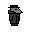

Computer Science: Achievements

- Graduates with B.S. in Computer Science Fall 2022.
- Currently working on digital twin development with Emerging Techology Ventures (Sandia Nat. Labs).
- Served as President / Serving as Vice President of NMNSU Game Development Club.
- Has developed basic computer games with classmates (featuring character on the left).
- Currently developing passion project computer game, with the hopes to animate, compose, and program the game in it's entirety.